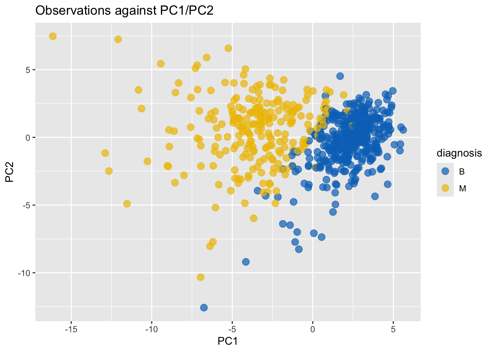
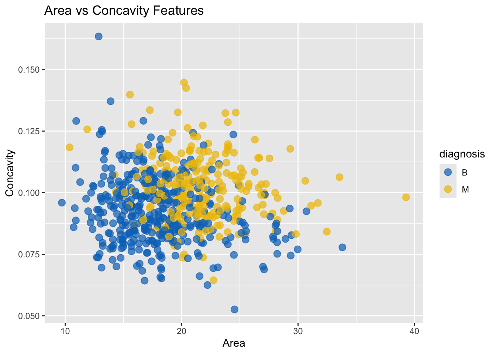
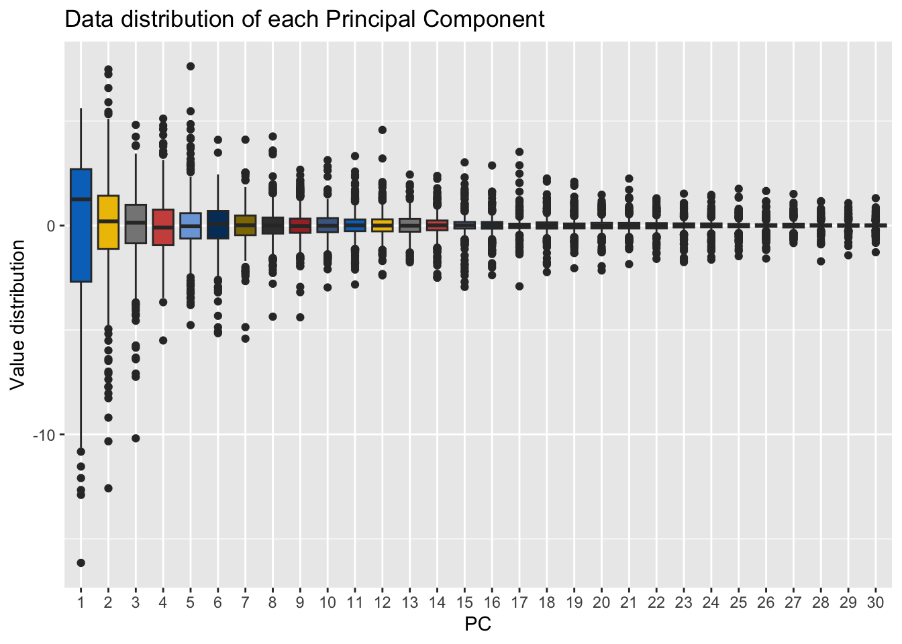
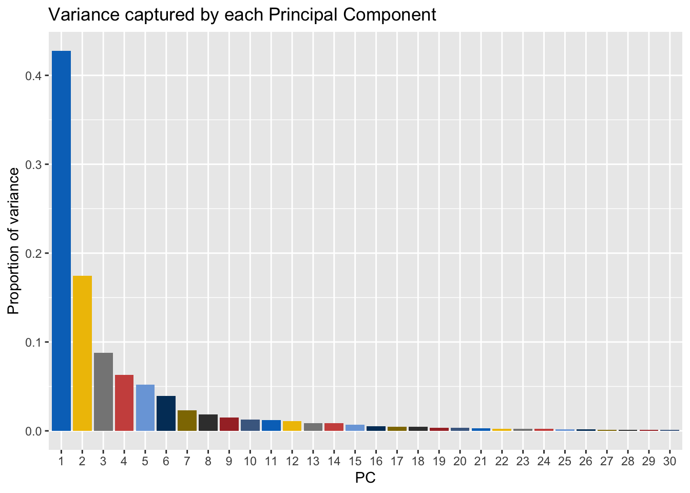
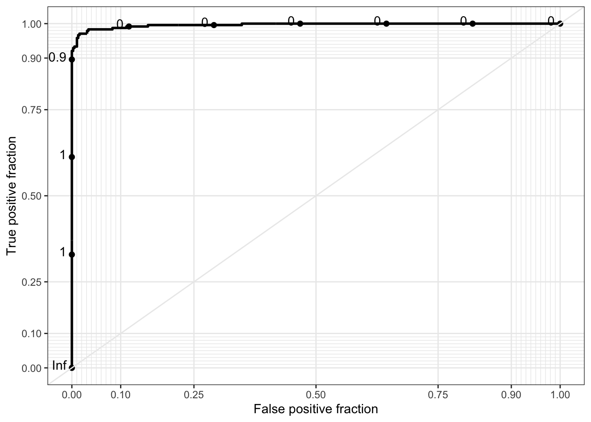

[1] "FROM: Group 32 (Andrew Li, Kevin Du, Sebastian Hyland)"Assignment 2
Setup
First, let us read the dataset into a data frame df:
df <- read.delim("ovarian.data", sep = ",", header = FALSE)
features <- c(
"perimeter", "area", "smoothness", "symmetry", "concavity", paste(
"protein", seq(1, 25),
sep = ""
)
)
names(df) <- c("cell_id", "diagnosis", features)
df$diagnosis <- as.factor(df$diagnosis)
head(df, n = 2) cell_id diagnosis perimeter area smoothness symmetry concavity protein1
1 85382601 M 17.02 23.98 112.80 899.3 0.11970 0.1496
2 88147102 B 15.00 15.51 97.45 684.5 0.08371 0.1096
protein2 protein3 protein4 protein5 protein6 protein7 protein8 protein9
1 0.24170 0.1203 0.2248 0.06382 0.6009 1.3980 3.999 67.78
2 0.06505 0.0378 0.1881 0.05907 0.2318 0.4966 2.276 19.88
protein10 protein11 protein12 protein13 protein14 protein15 protein16
1 0.008268 0.03082 0.05042 0.01112 0.02102 0.003854 20.88
2 0.004119 0.03207 0.03644 0.01155 0.01391 0.003204 16.41
protein17 protein18 protein19 protein20 protein21 protein22 protein23
1 32.09 136.1 1344.0 0.1634 0.3559 0.5588 0.1847
2 19.31 114.2 808.2 0.1136 0.3627 0.3402 0.1379
protein24 protein25
1 0.3530 0.08482
2 0.2954 0.08362Now, we can load the required libraries:
library(ggplot2)
library(tidyverse)
library(plotROC)
library(RSNNS)
# For plot themeing
library(ggsci)
jco_palette <- rep(pal_jco()(10), length.out = 100)
jco_fill <- scale_fill_manual(values = jco_palette)
jco_colour <- scale_colour_manual(values = jco_palette)Questions
Q1.1
To perform PCA on the dataset features, we use prcomp:
pca <- prcomp(
df[features],
scale. = TRUE, center = TRUE
)
pca_summary <- summary(pca)
str(pca_summary)List of 6
$ sdev : num [1:30] 3.58 2.29 1.62 1.37 1.25 ...
$ rotation : num [1:30, 1:30] -0.22 -0.11 -0.229 -0.222 -0.137 ...
..- attr(*, "dimnames")=List of 2
.. ..$ : chr [1:30] "perimeter" "area" "smoothness" "symmetry" ...
.. ..$ : chr [1:30] "PC1" "PC2" "PC3" "PC4" ...
$ center : Named num [1:30] 14.1809 19.3922 92.1982 663.7854 0.0965 ...
..- attr(*, "names")= chr [1:30] "perimeter" "area" "smoothness" "symmetry" ...
$ scale : Named num [1:30] 3.5715 4.2746 24.1993 354.8356 0.0142 ...
..- attr(*, "names")= chr [1:30] "perimeter" "area" "smoothness" "symmetry" ...
$ x : num [1:625, 1:30] -4.476 0.448 1.916 1.874 -2.802 ...
..- attr(*, "dimnames")=List of 2
.. ..$ : NULL
.. ..$ : chr [1:30] "PC1" "PC2" "PC3" "PC4" ...
$ importance: num [1:3, 1:30] 3.582 0.428 0.428 2.287 0.174 ...
..- attr(*, "dimnames")=List of 2
.. ..$ : chr [1:3] "Standard deviation" "Proportion of Variance" "Cumulative Proportion"
.. ..$ : chr [1:30] "PC1" "PC2" "PC3" "PC4" ...
- attr(*, "class")= chr "summary.prcomp"By slicing the importance field of the the pca_summary object, we get the variance associated with the first PC. The second row contains the variance associated with each PC, and the column is the PC of choice:
pca_summary_importance <- pca_summary$importance
pca_summary_importance[, 1:5] PC1 PC2 PC3 PC4 PC5
Standard deviation 3.581962 2.287258 1.623949 1.374095 1.249103
Proportion of Variance 0.427680 0.174380 0.087910 0.062940 0.052010
Cumulative Proportion 0.427680 0.602070 0.689970 0.752910 0.804920As such:
cat(pca_summary_importance[2, 1] * 100, "%")42.768 %of variance is accounted for by PC1.
Q1.2
We can use the “Cumulative Proportion” row to find the first PC for which this value exceeds 90%:
which(
pca_summary$importance[3, ] >= 0.9
)[1] %>%
cat(
"First item with cumulative variance over threshold: PC",
.,
sep = ""
)First item with cumulative variance over threshold: PC9As such, 9 dimensions are required to preserve 90% of the data’s variability.
Q1.3
pca$x |>
as.data.frame() |>
select(PC1, PC2) |>
mutate(diagnosis = df$diagnosis) |>
ggplot(aes(x = PC1, y = PC2, color = diagnosis)) +
geom_point(size = 3, alpha = 0.7) +
labs(
title = "Observations against PC1/PC2",
x = "PC1",
y = "PC2"
) +
jco_colour
Here, observations are plotted based on PC1 and PC2, coloured by diagnosis. Reasonably clear separation between the two clusters (a linear split) is visible.
Q1.4
df |>
as.data.frame() |>
ggplot(aes(x = area, y = concavity, color = diagnosis)) +
geom_point(size = 3, alpha = 0.7) +
labs(
title = "Area vs Concavity Features",
x = "Area",
y = "Concavity"
) +
jco_colour
Here, observations are plotted based on area and concavity. Although clustering is somewhat observed, it is not clearly differentiated.
Q1.5
In 1.3, principal component analysis (PCA) transforms the original 30 features into a new set of dimensions (principal components), ordered by the quantity of variance that they capture (as such, the first and second PCs capture the most variance). On the other hand, concavity and area in 1.4 are just two of these raw features.
Because PCA maximizes variance capture in each of its dimensions, response separation (in this case diagnosis) is typically greater than in individual raw features. Following this theoretical basis, we can visually identify greater separation based on diagnosis in the PCA chart than the concavity/area raw feature chart.
Q1.6
Let us first create boxplots which represent the data distribution of each PC:
pca$x |>
as.data.frame() |>
pivot_longer(
cols = everything(),
names_to = "PC",
values_to = "Value"
) |>
mutate(PC = factor(parse_number(PC))) |>
ggplot(aes(x = PC, y = Value, fill = PC)) +
geom_boxplot(show.legend = FALSE) +
labs(
title = "Data distribution of each Principal Component",
x = "PC",
y = "Value distribution"
) +
jco_fill
Now, let us visually represent the proportion of variance captured by each PC:
pca_summary$importance |>
t() |>
as.data.frame() |>
rownames_to_column("PC") |>
mutate(PC = factor(parse_number(PC))) |>
ggplot(aes(x = PC, y = `Proportion of Variance`, fill = PC)) +
geom_col(show.legend = FALSE) +
labs(
title = "Variance captured by each Principal Component",
x = "PC",
y = "Proportion of variance"
) +
jco_fill
Q2
Let us first define the following helper functions:
metrics <- function(matrix) {
true_pos <- matrix["M", "M"]
true_neg <- matrix["B", "B"]
false_pos <- matrix["M", "B"]
false_neg <- matrix["B", "M"]
accuracy <- (true_pos + true_neg) / sum(matrix)
precision <- true_pos / (true_pos + false_pos)
recall <- true_pos / (true_pos + false_neg)
list(
accuracy = accuracy,
precision = precision,
recall = recall
)
}
print_metrics <- function(metrics) {
cat("Metrics:\n")
for (name in names(metrics)) {
val <- metrics[[name]]
cat(name, ":", val, "\n")
}
}
print_confusion <- function(confusion_matrix) {
cat("Confusion matrix:", "\n")
print(confusion_matrix)
}Q2.1
Let us define a function to execute kmeans analysis:
kmeans_analysis <- function(features, scaled = TRUE, echo = TRUE) {
clusters <- (if (scaled) scale(features) else features) |>
kmeans(centers = 2) |>
pluck("cluster")
actual <- df$diagnosis
pred1 <- ifelse(clusters == 1, "M", "B")
pred2 <- ifelse(clusters == 1, "B", "M")
accuracy <- function(pred, actual) mean(pred == actual)
pred <- if (accuracy(pred1, actual) >= accuracy(pred2, actual)) {
pred1
} else {
pred2
}
table(pred, actual)
}Now, we can call this function to run kmeans analysis on the dataset’s feature columns:
analysis <- kmeans_analysis(df[features])
print(analysis) actual
pred B M
B 371 35
M 14 205then compute and print metrics for this confusion table:
metrics(analysis) |>
print_metrics()Metrics:
accuracy : 0.9216
precision : 0.9360731
recall : 0.8541667 Q2.2
We can repeat the above analysis 10 times using replicate:
replicate(
10,
{ kmeans_analysis(df[features], echo = FALSE) |> metrics() },
simplify = FALSE
) |>
bind_rows() |>
print()# A tibble: 10 × 3
accuracy precision recall
<dbl> <dbl> <dbl>
1 0.922 0.936 0.854
2 0.922 0.936 0.854
3 0.922 0.936 0.854
4 0.922 0.936 0.854
5 0.922 0.936 0.854
6 0.922 0.936 0.854
7 0.922 0.936 0.854
8 0.922 0.936 0.854
9 0.922 0.936 0.854
10 0.922 0.936 0.854TODO! Note on stochasticism.
Q2.3
We can repeat kmeans analysis but on principal components rather than features directly (the top 5 PCs are used):
analysis <- pca$x[, 1:5] |>
kmeans_analysis(scaled = FALSE, echo = FALSE)
print(analysis) actual
pred B M
B 369 35
M 16 205analysis |>
metrics() |>
print_metrics()Metrics:
accuracy : 0.9184
precision : 0.9276018
recall : 0.8541667 Q2.4
The results between Q2.2 and Q2.3 are very close. k-means clustering on all raw features provided a model with 92.16% accuracy, while clustering on the top 5 PCs had an accuracy of 91.84%. This very close result demonstrates that just 5 PCs — capturing approximately 80% of the total variance — are able to capture the majority of variance in the input data, and build a successful clustering model. However, the raw feature model still performed slightly better, signifying that some class-discriminative data is not represented by just 5 PCs.
Q3
Let us first extract training and testing datasets:
training_set <- df[
sample(nrow(df))
[1:(nrow(df) / 2)],
]
testing_set <- df[
sample(nrow(df))
[(nrow(df) / 2):(nrow(df))],
]To keep factor ordering consistent:
diagnosis_order <- c("B", "M")
training_set$diagnosis <- factor(training_set$diagnosis, levels = diagnosis_order)
testing_set$diagnosis <- factor(testing_set$diagnosis, levels = diagnosis_order)Q3.1
We will start by fitting a generalized linear model to the training set, then generate probabilities for the testing set:
glm_model <- training_set %>%
# Train off training_set
glm(
data = .,
formula = reformulate(
names(.[features]),
response = "diagnosis"
),
family = binomial
)Now, we can convert these probabilities to diagnoses for each entry in the training and testing datasets, and compute metrics:
gen_preds <- function(x) ifelse(x > 0.5, "M", "B")
run_model_analysis <- function(model, slice_op, train, test, type = "response") {
cat("----- Training analysis -----", "\n")
if (is.null(type) || type == "") {
training_preds <- predict(model, train[slice_op])
testing_preds <- predict(model, test[slice_op])
} else {
training_preds <- predict(model, train[slice_op], type = type)
testing_preds <- predict(model, test[slice_op], type = type)
}
training_confusion <- training_preds |>
gen_preds() |>
table(train$diagnosis) |>
print_confusion()
cat("\n")
metrics(training_confusion) |>
print_metrics()
cat("\n", "----- Testing analysis ------", "\n", sep = "")
testing_confusion <- testing_preds |>
gen_preds() |>
table(test$diagnosis) |>
print_confusion()
cat("\n")
metrics(testing_confusion) |>
print_metrics()
}
run_model_analysis(glm_model, features, training_set, testing_set)----- Training analysis -----
Confusion matrix:
B M
B 196 0
M 0 116
Metrics:
accuracy : 1
precision : 1
recall : 1
----- Testing analysis ------
Confusion matrix:
B M
B 186 1
M 5 121
Metrics:
accuracy : 0.9808307
precision : 0.9603175
recall : 0.9918033 Q3.2
First, let us run PCA on the training and testing datasets:
pca_model <- prcomp(
training_set[features],
scale. = TRUE,
center = TRUE
)
into_pca_df <- function(dataset) {
pca_model |>
predict(dataset[features]) |>
as.data.frame() |>
select(1:5) |>
mutate(diagnosis = dataset$diagnosis) |>
# Set diagnosis to first col, then 5 PC cols
select(diagnosis = diagnosis, everything())
}
training_pca_df <- into_pca_df(training_set)
testing_pca_df <- into_pca_df(testing_set)Which provides neat data frames:
head(training_pca_df) diagnosis PC1 PC2 PC3 PC4 PC5
534 M -3.2343910 1.9029712 -0.1398720 -0.25975670 -1.1569377
321 B 3.3979675 -2.4196768 1.7726577 -0.06044653 -2.6996021
392 B 2.2414226 -3.2420813 3.1697332 -0.52330118 -1.4536712
409 M -4.1109533 1.6090443 -0.3879812 1.01113427 -0.3244698
310 B 0.4737168 0.5587922 -1.0478063 -1.32120015 0.7268667
580 B 2.7936897 -1.1157653 1.4353603 0.19561147 0.7556702head(testing_pca_df) diagnosis PC1 PC2 PC3 PC4 PC5
216 B 2.043251 -1.13224316 0.9743632 -0.8137436 -0.07939179
319 B 2.217479 -0.51471200 -1.9612676 -1.9228227 -1.59384556
423 B 4.183442 -0.15076497 -0.2558908 -0.5757547 -0.77696660
482 B 1.932734 -0.36272777 -0.1639285 0.2621012 -1.49760205
580 B 2.793690 -1.11576529 1.4353603 0.1956115 0.75567016
172 B 0.493877 -0.06739971 -0.5825181 0.3444980 1.43709398Now, we can repeat the analysis from 3.1 with the top 5 PCs:
glm_pca_model <- training_pca_df %>%
glm(
data = .,
formula = reformulate(
colnames(training_pca_df[2:ncol(training_pca_df)]),
response = "diagnosis"
),
family = binomial
)Finally, associate probabilities with diagnoses and generate metrics:
run_model_analysis(
glm_pca_model,
2:ncol(testing_pca_df),
training_pca_df,
testing_pca_df
)----- Training analysis -----
Confusion matrix:
B M
B 195 3
M 1 113
Metrics:
accuracy : 0.9871795
precision : 0.9912281
recall : 0.9741379
----- Testing analysis ------
Confusion matrix:
B M
B 187 4
M 4 118
Metrics:
accuracy : 0.9744409
precision : 0.9672131
recall : 0.9672131 Q3.4
The results in both 3.1 and 3.2 were both excellent, but using the top 5 PCs yielded marginally better accuracy when predicting diagnoses on testing data (99.0% vs 97.1%). PCA can help by reducing low variance noise in the data, which tends to help stablize it. The model built off raw features has a perfect fit when run on its training data, which suggests that the model is overfit or has complete separation; it then performs worse on the test dataset. On the other hand, the model built off the top five PCs has slightly worse accuracy when rerun on its training data (98.3%) but then performs better on the test dataset.
Q3.5
Since the PC model outperformed the raw features model, let us use it on the dataset at large and generate a ROC curve. First, convert the original df into a suitable dataframe, and obtain metrics:
df_pca <- into_pca_df(df)
model_preds <- predict(glm_pca_model, df_pca, type = "response")
model_confusion <- model_preds |>
gen_preds() |>
table(df_pca$diagnosis) |>
print_confusion()Confusion matrix:
B M
B 377 7
M 8 233metrics(model_confusion) |>
print_metrics()Metrics:
accuracy : 0.976
precision : 0.966805
recall : 0.9708333 Now, we can generate a ROC curve:
data.frame(
D = as.numeric(df$diagnosis == "M"),
M = model_preds
) |>
ggplot(aes(d = D, m = M)) + geom_roc() + style_roc()
The ROC curve bows sharply toward the top-left corner, demonstrating strong predictive power. This indicates high sensitivity (true positive rate) with minimal false positives across most threshold values, suggesting the model has excellent discrimination between benign and malignant cases. Unlike single-threshold metrics, the ROC curve provides a comprehensive view of the model’s performance across all possible classification thresholds, illustrating the trade-off between sensitivity and specificity.
Q3.6
Raw features
scaled_training_matrix <- scale(training_set[features], center = TRUE, scale = TRUE)
ctr <- attr(scaled_training_matrix, "scaled:center")
sdr <- attr(scaled_training_matrix, "scaled:scale")
scaled_training_df <- training_set
scaled_training_df[features] <- scaled_training_matrix
scaled_testing_df <- testing_set
scaled_testing_matrix <- scale(testing_set[features], center = ctr, scale = sdr)
scaled_testing_df[features] <- scaled_testing_matrix
set.seed(1)
y_train_num <- as.numeric(training_set$diagnosis == "M")
mlp_all <- mlp(
as.matrix(scaled_training_df[features]),
y_train_num,
size = 5,
maxit = 200,
learnFuncParams = c(0.1),
linOut = FALSE
)
run_model_analysis(mlp_all, features, scaled_training_df, scaled_testing_df)----- Training analysis -----
Confusion matrix:
B M
B 196 1
M 0 115
Metrics:
accuracy : 0.9967949
precision : 1
recall : 0.9913793
----- Testing analysis ------
Confusion matrix:
B M
B 190 2
M 1 120
Metrics:
accuracy : 0.9904153
precision : 0.9917355
recall : 0.9836066 PCA
y_train_num <- as.numeric(training_pca_df$diagnosis == "M")
mlp_pca <- mlp(
as.matrix(training_pca_df[2:6]),
y_train_num,
size = 5,
maxit = 200,
learnFuncParams = c(0.1),
linOut = FALSE
)
run_model_analysis(mlp_pca, 2:6, training_pca_df, testing_pca_df)----- Training analysis -----
Confusion matrix:
B M
B 196 3
M 0 113
Metrics:
accuracy : 0.9903846
precision : 1
recall : 0.9741379
----- Testing analysis ------
Confusion matrix:
B M
B 187 3
M 4 119
Metrics:
accuracy : 0.9776358
precision : 0.9674797
recall : 0.9754098